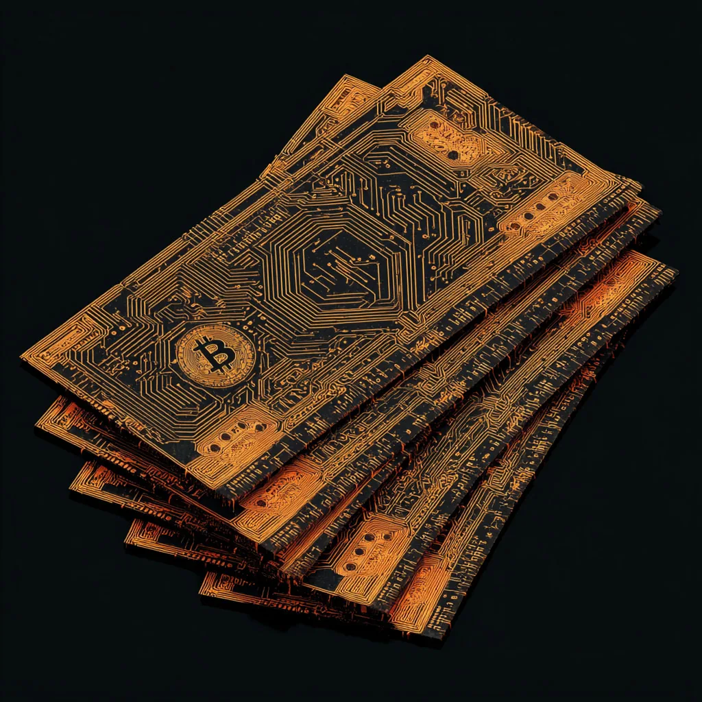

eCash will save our relays
In this article I explain the trouble with Nostr relay payments today and how eCash is the best solution. I'll cover how relays currently earn revenue; the speed, storage, and unit-of-account benefits of eCash; and paint a picture of the new user experience.

Imagine a future where $5 a year gets you access to blazingly fast, incredibly private, and feature rich Nostr interactions. Your apps are always updated. Your data syncs instantly. There’s never spam or ads in your feed. A new social game comes out every week that you play with your friends and family. You can switch accounts whenever you want. You can’t be banned or targeted.
This is coming and we are building it. But first, we need to fix relay monetization.
Why Relays Need a Better Money Model
Relays are the backbone to Nostr; they facilitate all of our interactions. Over time we’ve seen specialized relays emerge, like Pablo’s https://purplepag.es/ for storing user profiles; web-of-trust relays that filter what you see by who you follow; and paid relays for high reliability (i.e. https://nostr.wine/).
There’s a number of other stuff use cases for Nostr that use modern encryption schemes (like NIP-17, NIP-EE, etc) that require relays to accept notes from anonymous, randomly generated npubs. Some examples are private DMs and group chats, Nostr-native APIs (we call these Data Vending Machines), and many others. These use cases require privacy and anonymity that are achieved, in part by, randomly generated npubs.
High performance relays need to earn income to cover high server and bandwidth costs, and the most common method today links a subscription payment to your npub. But this breaks down. What if I want to use these encryption schemes and need to send notes using randomly generated keys to maintain anonymity? What if I want to have many npubs for different use cases? Current paid relays aren’t incentivized to support this kind of anonymous behavior. It’s too slow and expensive to pay with lightning or on-chain bitcoin per-note.
The best solution is to use eCash for usage-based payments. Chaumian eCash projects like Cashu allow users to deposit another currency (Bitcoin) and receive cryptographically blinded IOUs (eCash) in various denominations. The nature of these IOU tokens is that the mint does not know what user bought these tokens or whether they were transferred to another user before being redeemed back to the mint. In other words, the best privacy for any IOU. And since they are IOUs they can be as small as needed.
Relays can use eCash in two ways. First, they can use an existing 3rd party mint. Second, they can run their own closed-loop mint to provide eCash only for users of the relay. Relay operators may want to run their own mint to guarantee high rate limits and reliability that are not possible from 3rd party mints.
Using eCash, a relay can charge every time a websocket connection is opened and every time a note is published. Users pay once in a blue moon to acquire many small eCash tokens and they redeem single tokens as they use the relay. eCash is a better privacy alternative to standard relay subscriptions that track everything an npub does.
Why not use lightning or on-chain bitcoin?
Short answer: transaction fees and unit-of-account denominations. Every lightning and on-chain bitcoin payment requires a fee, while transferring eCash is fee-less. That’s right. Zero fees to send eCash to the relay. On Lightning you can theoretically go as small as milli-sats (1/1000th of a sat), although there are issues with the practicality of this. And in use cases where you need to interact with the relay frequently, milli-sats may not be small enough (especially if the price of bitcoin continues to rise). Fortunately, eCash can be denominated into infinitely small portions.
Users benefit from the privacy of eCash while relays can charge per use. Every interaction with the relay can be from a different IP address and a different npub. Since the relay is earning money, relays can run on the best hardware and deliver commercial grade service. It’s a win-win for everyone.
But who will run the mint?
Easy. While the generic eCash mint operator faces potential legal repercussions if they do not obtain the right licenses to operate in jurisdictions like the United States, relay providers can run a closed loop mint to reduce legal risk. (Disclaimer: I’m not a lawyer and this is not legal advice. There may still be legal restrictions with running a closed-loop mint depending on where you live). A closed-loop mint refers to a mint that supports only redeeming the eCash directly to the relay for services; once you buy eCash you can’t convert it back to the original currency. In this way, the eCash tokens act more like gift cards (albeit millions of tiny gift cards) and can only be redeemed by sending them to the relay attached to notes or websocket open requests. Relays can of course avoid this issue altogether and use a 3rd party eCash mint.
Will eCash slow down relay operations?
Over the last few weeks I’ve been benchmarking running a relay + mint combo. I’ve clocked the average time to redeem eCash to 10ms while running an off-the-shelf CDK (Cashu Development Kit) mint using a Postgres database (via Docker) on my Apple M1 Max. The relay redeems the eCash by calling a swap operation with the mint; which is the most basic way to perform this check and probably the slowest. I’d wager it’s possible to get the delay closer to 1ms. Either way, even a 10ms delay means it’s fast enough to add an eCash check in every API call and every note broadcasted to the relay without affecting end users.
One way to decrease the delay is for the relay provider to issue locked eCash. At the time of creation, the mint will encrypt the eCash tokens so that only the relay can decrypt them. The relay then simply needs to check that the eCash was issued by the right mint, is encrypted to the relay’s public key, and that the eCash hasn’t already been received.
Both cases require at least one database query to check the eCash is still valid and hasn’t been double spent. And these days such database queries run in sub 1ms time.
Will the user’s eCash need large storage?
eCash tokens are stored as encrypted strings. They are bearer assets. In the generic eCash wallet you have negligible storage requirements (just a few kilobytes) because you have just a few tokens in different amounts (like having dollar bills in a wallet denominated as a few 100s, two 20s, one 5 dollar bill, and a couple quarters). Each eCash “bill” or “token” is between 150-400 bytes, so having 10-20 tokens is an extremely small amount of data.
However for the relay+mint combo we describe here, you want to have thousands or millions of ready-to-go small unit tokens. Let’s assume each eCash token takes up 400 bytes (a worst case upper bound). Therefore if by “boatload” we mean on the order of 10k eCash tokens, then we’re looking at 4 MB of storage, about the size of a single high quality picture. Even a million eCash tokens would only be 400 MB, which is is less than 0.4% of storage capacity on a modern smartphone (128GB).
What’s the UX?
- User buys a boatload of tiny eCash tokens for a few sats.
- The user stores these tokens in an eCash wallet
- This can live on their device, in an encrypted cloud, in the Nostr client they are using, etc.
- Every time the user interacts with the relay, one token gets attached to the interaction.
- When the user runs out of tokens, they buy some more. Ideally, this happens once or twice a year.
Today’s eCash relay options
Credit goes to npub1h0uj825jgcr9l…nsrwx8 for launching and using the first relay that accepts eCash per message. Their extension to the original nostr-rs-relay can be found here. Their relay is live at https://relay.keychat.io/.
For my performance testing (work in progress; more to come soon) I created a new strfry relay plugin to accept ecash run by a mint that the relay controls and therefore can easily be extended to support any denomination of bitcoin-based ecash, include micro-sats (1/1,000,000th of a sat).
This means that as of today, there are at least two Nostr relay demos showing it is possible to accept eCash on a per-note basis. Those relays are nostr-rs-relay (thanks to Keychat) and strfry via a plugin.
Building for tomorrow
eCash is the only payment method that lets us carve up value into infinitely small portions and stream it to services on a per-usage basis.
The monetization challenge for the entire Nostr ecosystem gets solved if we can adopt the eCash pattern in our apps, devices, and workflows. Users will get accustomed to having eCash wallets in their clients and then we can send micro payments to services like Data Vending Machines, Nostr-native file hosting via blossom servers, decentralized markets, games, and more. For any individual human, $1 of eCash will go incredibly far. At scale we get real incentives for developers and designers to build, maintain, and ship the best Nostr experiences.